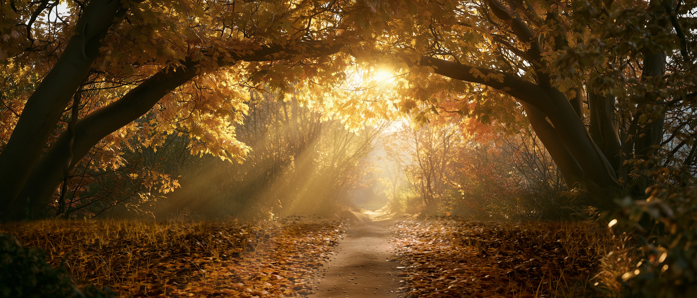
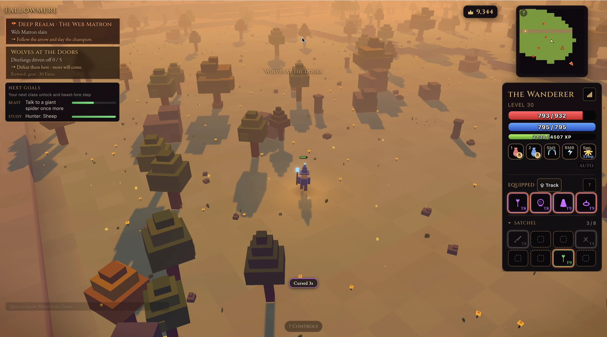
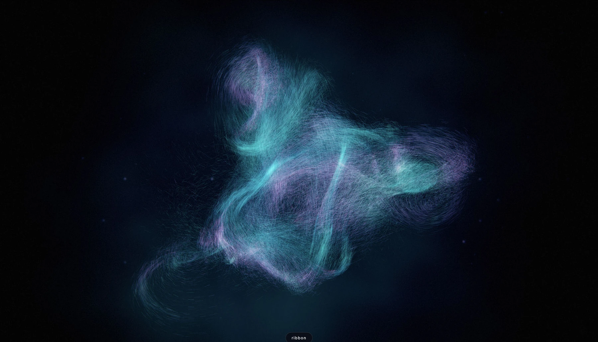
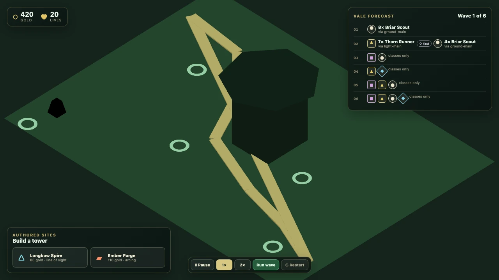

Light / hidamari
A place made of light.
Blender bakes the lighting; the browser reprojects depth. Audio is still being tuned.
See the working notesSoftware engineering × Astrophysics
I learn things by building them. Healthcare systems, shared worlds, a field of light that listens. Different questions; the same curiosity.
Open the notebook
Fig. 01 / A recorded stateOpen country under a dust-orange sky. Direfangs push in from the edges and the quest log starts counting them.
Seven region captures from the running game. These are recorded views, not a live connection to a realm.
I keep world state, quests and loot in a separate realm service. The browser renders the world; it does not decide what happened in it.
A beautiful place is only half a multiplayer game. The other half is making sure the creature you hit, the item you pick up and the person beside you agree about the same event.
The two-browser capture in the case study shows two players in the same Hearthvale.
 Fig. 02 / A recorded state
Fig. 02 / A recorded state
14.0 kn through the water · 11.1 kn VMG
Six recorded frames. Sea state moderate, wind 40°, seed 4193. Only the time-of-day setting changed.
I expose the sailing model in the HUD: point of sail sets thrust; thrust and heading set velocity toward the mark. The scenery changes how the same rules feel.
At golden hour the boat makes 15 knots through the water, but only 2.3 toward the mark. Speed is not the same thing as progress. The angle you choose is the game.
Live with accounts, persistent cargo and room for up to 20 players per sea.

Fig. 03 / A recorded stateTwo styles and a lull, all from one session. Only the style and the music changed.
Two styles and a lull, captured in one session. The style and music changed; these frames do not play audio.
I measure key, tempo, transients and stereo placement alongside volume. Quiet passages thin, dim and slow the particle field instead of simply turning it down.
Frequency cannot separate a voice from a piano when they share the same octaves. Centre versus sides gives the analysis another way to listen. The renderer follows that richer signal.
Measured GPU time: 620k particles at 8.07ms; 1.2M particles at 11.85ms.
 Fig. 04 / A recorded state
Fig. 04 / A recorded state
Tidereach Causeway, the widest board in the game: five roads, and a tide that closes them.
Four of ten boards, captured from the running game. Changing the figure shows an authored map, not a simulated battle.
I gave the later boards their own constraint. Tidereach closes causeways mid-battle: enemies reroute, and the defense you paid for is no longer the one you keep.
The rules sit on a fixed 60Hz simulation. Models are colored boxes placed in code; sound is synthesized when it plays. That leaves the complexity budget for the campaign itself.
Three heroes, three difficulties, endless records and 154 tests. Live and installable.
 Fig. 05 / A recorded state
Fig. 05 / A recorded state
The layers spread apart to reveal the interior of the cube.
Two captured views of the game. The figure compares visibility; it does not accept gameplay input.
I score swipes against the screen-space projection of the cube’s axes. Hidden tiles become translucent; holding Space spreads the layers apart so you can read the board.
Twenty-seven cells and six slide directions make a familiar rule unfamiliar again. On a phone, a small optional gyro tilt lets you peek without changing what a swipe means.
A self-contained 553KB file, local saves and 62 tests.
The professional record
Notable Health
Software Engineer · 2022–present
~250,000patient calls a month
through my team’s voice platform
I set technical direction for patient identity, routing, observability and reliability. A patient conversation crosses healthcare systems, carriers and call centers; the boundaries are part of the work.
Make fallback routing configurable, so a caller can stay connected when an upstream provider goes dark.

Light / hidamari
Blender bakes the lighting; the browser reprojects depth. Audio is still being tuned.
See the working notes
Boundaries / Elderwood Vale
A deterministic core that knows nothing of the DOM, the renderer or the clock.
See the working notesA note from the author
I did computer science and astrophysics at the same time because I couldn’t choose between them. Some weeks meant Algorithms and General Relativity in the same problem-set pile.
Now I’m in the Bay Area. Away from code, it’s heirloom tomatoes, bikes and Pink Floyd, roughly in that order. I’ve wanted to be an astronaut since I was four. Still would.
Have a question worth following? Write to me